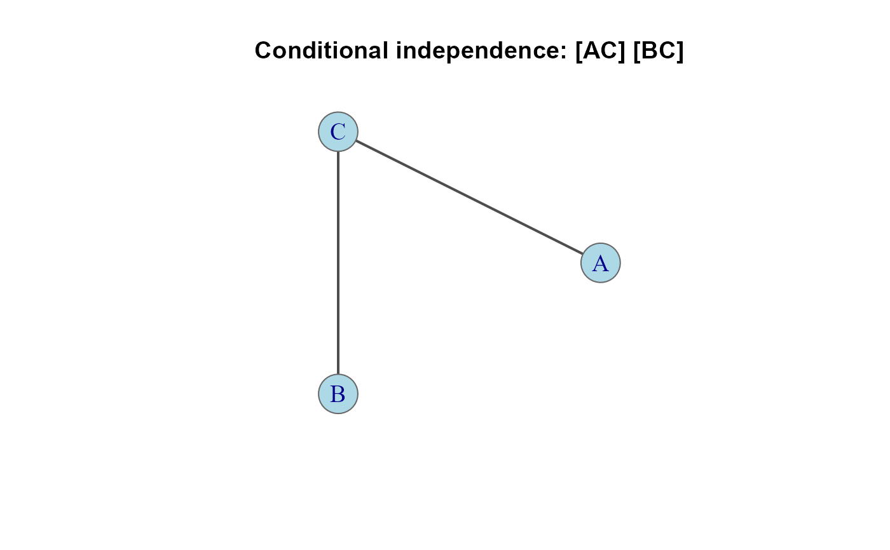
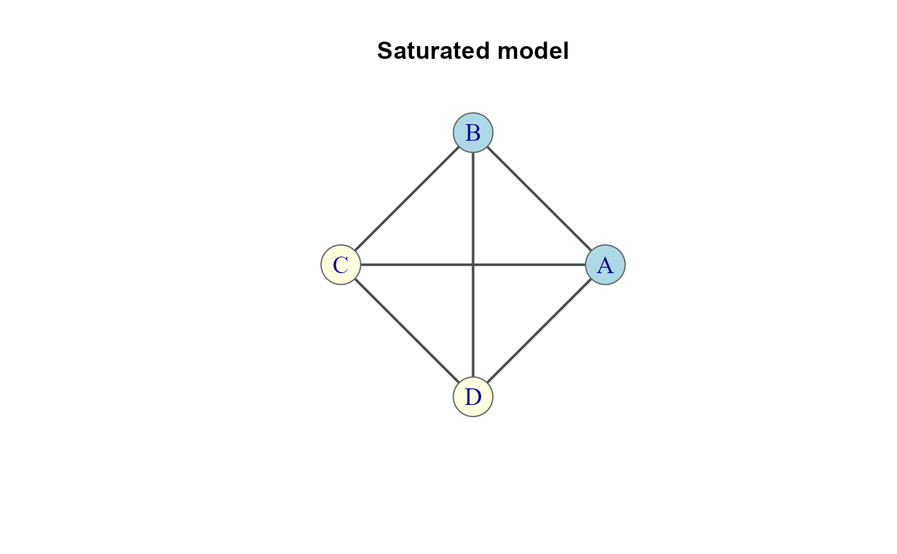

Plot method for assoc_graph objects, displaying the association
structure of a loglinear model as a network diagram.
Arguments
- x
An
assoc_graphobject, as returned byassoc_graph.- layout
Layout function or coordinate matrix for node positions. Defaults to
layout_in_circlefor up to 6 nodes,layout_with_frotherwise.- groups
Optional named list assigning variables to groups for coloring, e.g.,
list(response = "Survived", predictors = c("Class", "Sex", "Age")).- colors
Character vector of colors for groups. Recycled as needed.
- vertex.size
Vertex size (default 30).
- vertex.label.cex
Label size for vertex names (default 1.2).
- edge.width
Edge width (default 2). If edge weights are present, widths are scaled from the weights automatically.
- edge.label
Optional edge labels. If
TRUEand edge weights are present, the weight values are used as labels.- ...
Additional arguments passed to
plot.igraph, such asmainfor a title.
See also
Other loglinear models:
assoc_graph(),
get_model(),
glmlist(),
joint(),
seq_loglm()
Examples
# Basic structural plot
g <- conditional(3, factors = c("A", "B", "C")) |> assoc_graph()
plot(g, main = "Conditional independence: [AC] [BC]")

# With grouped node colors
g <- saturated(4, factors = c("A", "B", "C", "D")) |> assoc_graph()
plot(g, groups = list(c("A", "B"), c("C", "D")),
main = "Saturated model")
